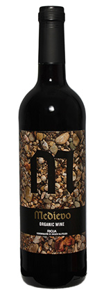
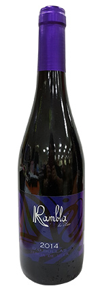
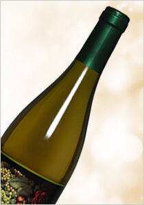
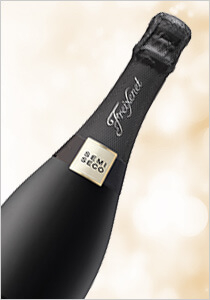
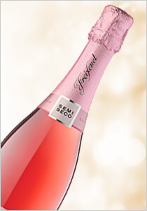
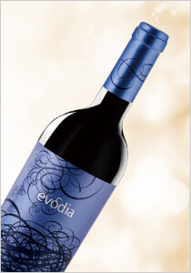
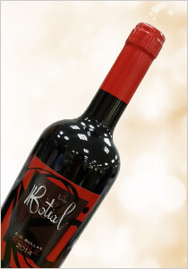

西班牙里奧哈蔓沃風土有機紅酒
Spain Rioja Medievo Ecologico red
價格：$420
產品編號：10-18-01
產品總數：120 瓶
每人限購：6 瓶


徐培芬 / Vivian 評分：

果味成熟甜美，順口好喝。

曾孟翊 / Xavier 評分：

紅色莓果味，易飲。
地區：里奧哈
適合搭配：


葡萄品種：田帕尼優
特色說明：
成熟紅莓，紫蘿蘭和巧克力香，豐富口感和長長餘韻。

西班牙穆爾西亞 Rambla 紅酒
Spain Murcia Tercia Rambla red
價格：$250
產品編號：10-09-02
產品總數：120 瓶
每人限購：6 瓶

T大評分：
甜美，好喝，不單調。
Guía Peñin 2017 評分: 89 / 100:
"Double Gold" Medal in China Wine Awards CWSA Hong Kong 2016.
"Double Gold" Medal in China Wine Awards CWSA Hong Kong 2016.
地區：穆爾西亞
適合搭配：
葡萄品種：慕維得爾
特色說明：
李子和黑莓的香氣，口感如天鵝絨般柔軟。

西班牙里奧哈蔓沃果香有機白酒
Spain Rioja Medievo Ecologico white

西班牙菲思娜黑緞帶汽泡酒
Spain Cava Freixenet Cordon Negro sparkling

西班牙菲思娜粉紅緞帶玫瑰汽泡酒
Spain Cava Freixenet Cordon Rosado sparkling

西班牙艾弗亞老藤紅酒
Spain Calatayud Evodia old Vines Garnacha red

西班牙穆爾西亞 Botial 紅酒
Spain Murcia Tercia Vina Botial red
如欲訂購請洽 0809-036-888 客服專線，並告知產品編號與數量，訂購完成後 2 天 ，請至家樂福天母店出示身分證領取並完成付款。